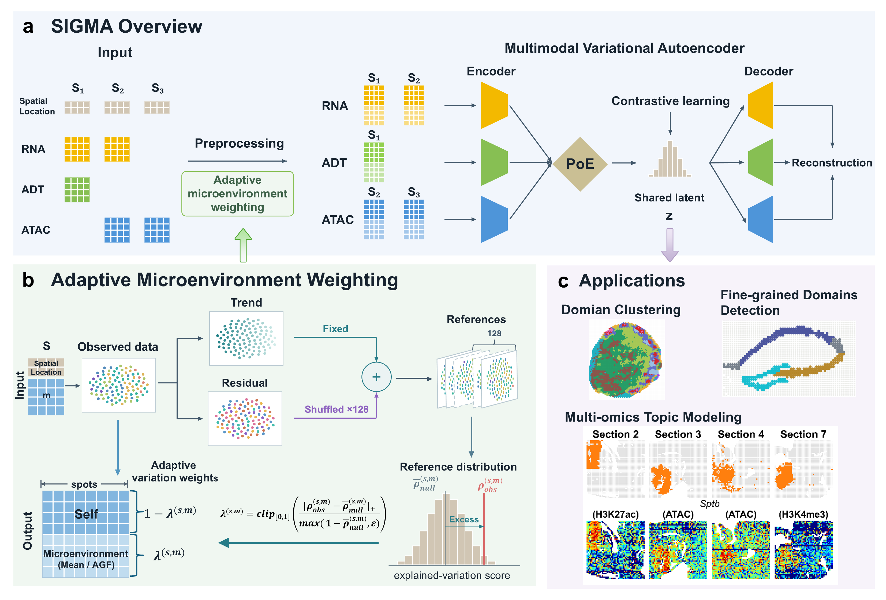

Home
Documentation site: https://sigma-docs.sigmaspatial.workers.dev/
Tutorials

SIGMA integrates spatial multi-omics data through mosaic and vertical workflows.
Source code: labxscut/sxSIGMA.
The examples cover Simulation, Human lymph node, Mouse embryo and Brain. Saved-panel plotting inputs are included. Raw training data are separate; file requirements are listed in Examples.
Installation
Install the SIGMA package from the directory containing pyproject.toml:
git clone https://github.com/labxscut/sxSIGMA.git
cd sxSIGMA
python -m pip install .
See Installation for Python, R/mclust, GPU and Jupyter setup.
Main function
sigma.run(config, …)
Key configuration parameters include:
preset:
simulation,lymph,embryoorbrain.data_root: directory containing the input data for the selected workflow.
output: a separate directory for prepared data, saved results and logs.
integ and contrastive: integration and contrastive loss weights.
device:
cpuorcuda; use gpu_index to select the GPU.max_epochs: optional training-epoch override; omitted values retain the original model default.
from sigma import run
config = {
"preset": "lymph",
"data_root": "data/lymph",
"output": "results/lymph",
"integ": 950,
"contrastive": 0.35,
"device": "cuda",
"gpu_index": 0,
}
run(config, prepare_only=True)
run(config, resume=True)
The workflow writes results to output. The return value is a completed
process, not an AnnData object. See sigma.run and the examples for
loading the saved representations and plotting the results.